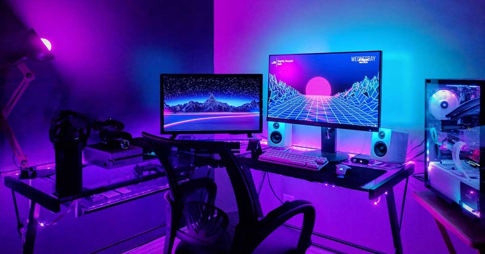

Tipps:
-Hardware auswählen
-Ergonomie beachten
-Richtige Beleuchtung wählen
-Kabelmanagement verbessern
-Audio in guter Qualität
-Zusätzliche Gadgets nutzen
-Dekorationen hinzufügen
Das Endergebniss:
